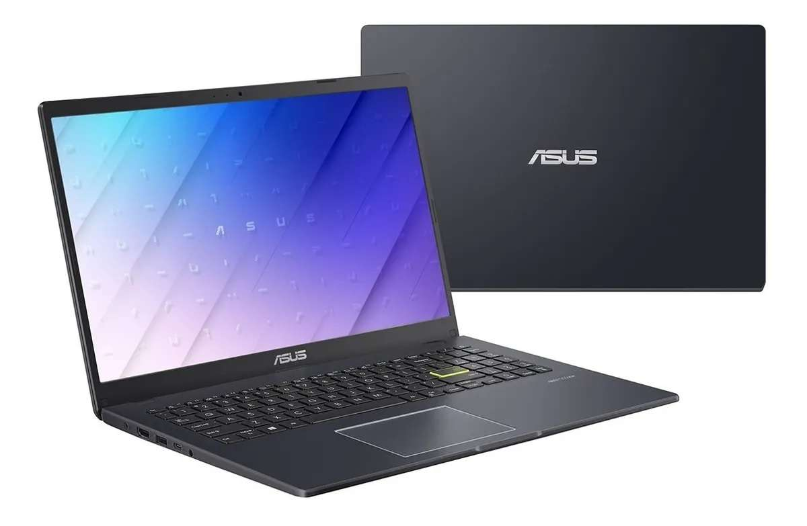

Notebook Asus LS 510
Procesador Intel Celeron
Ofrece un rendimiento sólido para tareas cotidianas y multitarea básica, con una velocidad de reloj de hasta 2,8 GHz.
La L510 cuenta con 4GB de RAM DDR4 y un almacenamiento de 128GB en estado sólido
Lo que te permite un acceso rápido a los datos y una respuesta rápida del sistema.
Cuenta con un diseño delgado y elegante
Con un peso de solo 1,6 kg, lo que la hace más fácil de transportar a donde sea que vayas.